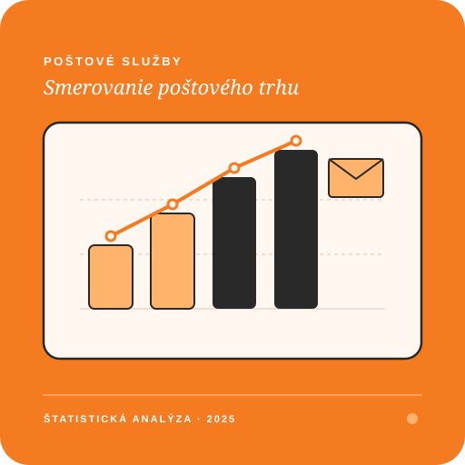
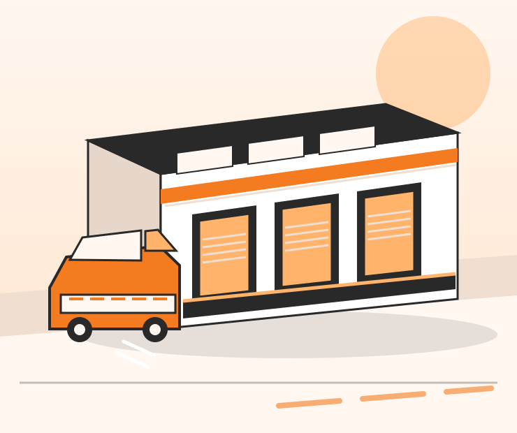
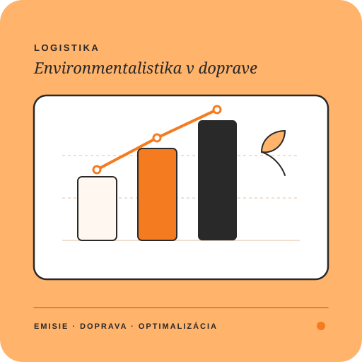
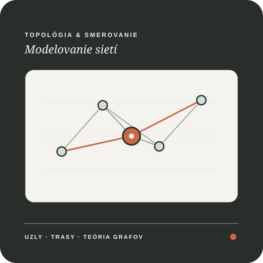

Ekonomický vývoj poštových služieb
Podrobná ekonomická analýza poštových služieb poskytovaných poštovými podnikmi.
Prieskumy · Práce · Články
Som denný študent Žilinskej univerzity v Žiline a píšem práce, a články z oblasti, ktoré má zaujímajú.
Články a prieskumy
Analýza pre každého Výskum na každý rokVybrané práce · 2023 — 2025
Spracované články a práce

Podrobná ekonomická analýza poštových služieb poskytovaných poštovými podnikmi.

Prieskum logistických spoločností a analýza faktorov, a vplyvu na životné prostredie.

Analýza a modelovanie poštových sietí s cieľom zlepšiť efektivitu.
O mne
Pri výskume má najviac baví tvorba hypotéz a záverečne zhodnotenie, či som sa trafil do čierného. Spájam osobné poznatky, teóriu a kritické či kreatívne myslenie pri hľadaní odpovedí.
Najradšej pracujem vtedy, keď má výskum zaujíma a naučím sa niečo nové. Keď práve nepracujem na výskumoch, pravdepodobne sa učím a venujem novým kultúram a jazykom.